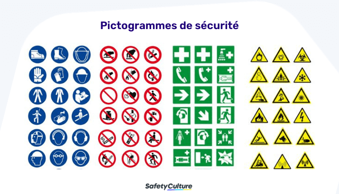
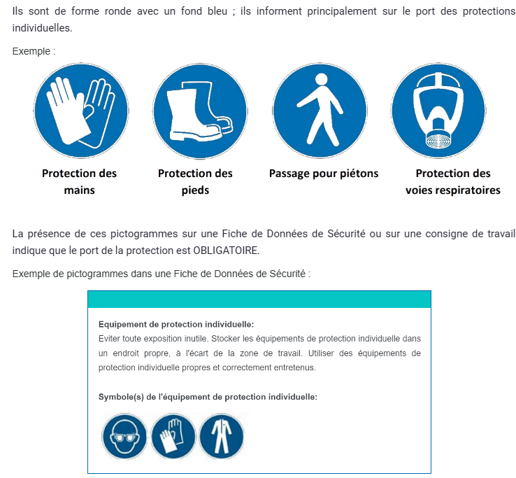
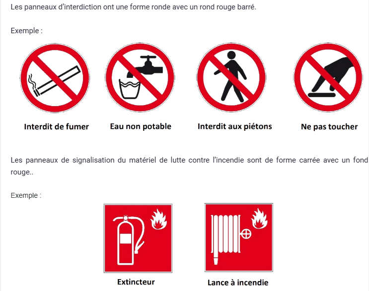
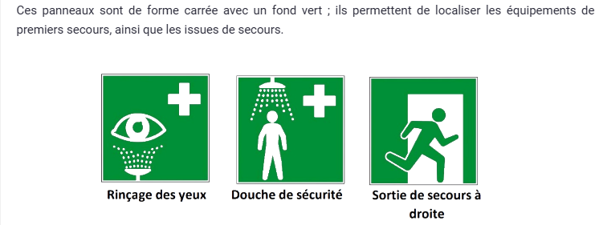
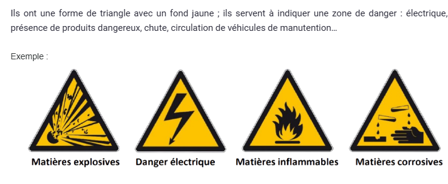
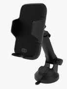

Calendrier Technologie 3ème - 2025/2026
| Date | Cours | Date | Cours |
|---|
Campagnes PIX 3ème
- PIX n°0 : QFDZSX184
- PIX n°1 : WLQEXF572
- PIX n°2 : HDTLBZ591
- PIX n°3 : UGBZWL178
- PIX n°4 : ZNXAUQ893
- PIX n°5 : QRRWSN944
- PIX n°6 : DJNCWL846
Séance 1 — Sécurité & organisation du poste
Objectif : installer un poste sûr et appliquer les règles d’atelier.
- Connaître les règles de sécurité de l’atelier (équipement, comportement, procédures d’urgence).
- Savoir organiser son poste de travail : zone propre, zone outil, zone matériau, zone stockage.
- Être capable d’identifier 8 signes / pictogrammes de sécurité et expliquer leur sens.
- Appliquer la checklist d’installation du poste sans aide (évaluation formative).
- Responsabilité et sécurité en milieu technique.
- Organisation et méthodologie du travail.
- Communication : expliquer oralement les règles à un pair.
Qu’est-ce que la technologie en 3ᵉ ?
La technologie est une discipline du cycle 4 (5ᵉ – 4ᵉ – 3ᵉ). En 3ᵉ, elle constitue la dernière étape avant le lycée et a plusieurs rôles :1. Donner du sens aux sciences
- On part des objets techniques du quotidien (smartphone, vélo électrique, imprimante 3D, etc.).
- On analyse leur fonctionnement, leurs composants, leurs énergies.
- On comprend aussi leurs impacts sur l’environnement et la société.
2. Développer la pensée informatique et la programmation
- Les élèves programment des systèmes simples (cartes électroniques type Arduino/Micro:bit, robots, capteurs).
- Ils apprennent à raisonner en algorithmes (si… alors…, boucles, variables).
3. Concevoir et réaliser un projet
- C’est l’aboutissement du cycle 4 : les élèves travaillent en groupe pour imaginer, modéliser, fabriquer et tester un objet ou système technique.
- Ils utilisent des outils numériques (CAO 3D, simulation, prototypage).
4. Se préparer à l’orientation
- La technologie en 3ᵉ ouvre sur la découverte des métiers et des formations techniques, industrielles, numériques.
- C’est aussi une matière du DNB (Diplôme National du Brevet) (contrôle continu + parfois épreuve orale de projet).
📊 Ce que les élèves acquièrent
- Analyser un objet technique.
- Comprendre énergie, mécanique, informatique, matériaux.
- Concevoir en groupe un objet ou un projet.
- Programmer et utiliser des outils numériques.
- Travailler en équipe et présenter un projet.
La technologie en 3ᵉ, c’est une discipline qui relie sciences, outils numériques et créativité. Elle apprend à comprendre comment les objets qui nous entourent fonctionnent et comment en inventer de nouveaux, tout en respectant la sécurité, l’environnement et le travail collaboratif.
« Quel est l’objet technologique qui a le plus changé votre quotidien ? »
Les pictogrammes de sécurité

Quelques exemples :
|
 |
 |
|
 |
 |
Organisation du poste de travail
1.Où ranger ses affaires
- Cartable et affaires personnelles : doivent rester à un endroit précis (ex. sous le bureau ou à un espace défini, pas dans les allées).
- Cahier de techno / feuille : posé bien droit sur le bureau pour prendre des notes.
- Matériel collectif : chaque boîte d’outils, boîte de vis, lunettes de protection → montrer l’endroit exact où ils sont rangés dans la salle.
2. Comment circuler en sécurité
- Toujours marcher, jamais courir (risque de chute avec outils/matériaux).
- Ne pas bloquer les allées → montrer la zone de circulation principale (chemin vers la porte, vers les armoires).
- Respect de la distance de sécurité : pas de regroupement autour d’une machine en marche.
- Rappel des issues de secours (montrer la porte de sortie, le plan d’évacuation).
3. Comment manipuler le petit matériel
- Tournevis/pinces : toujours tenus par le manche, jamais utilisés pour “jouer” ou pointer vers quelqu’un.
- Vis/écrous : garder dans une coupelle, pas en vrac sur la table (évite les pertes et accidents).
- Lunettes de protection : doivent être portées quand on manipule outils, matériaux ou prototypes.
- Gants : seulement si consigne donnée → expliquer qu’ils protègent mais qu’ils ne doivent pas être utilisés n’importe quand (risque de gêner les gestes fins).
« Quelle règle de sécurité est la plus importante selon vous ? Pourquoi ? »
PIX n°1 :
Code : WLQEXF572
Classe absente
Classe absente
Classe absente
Séance 14 : Identifier les fonctions principales d’un véhicule autonome
Thème : Structure, fonctionnement et comportement d’un objet technique
Compétence visée : Identifier les fonctions et l’organisation d’un système technique
Objectifs d’apprentissage-
Ce que les élèves vont apprendre (connaissances) :
- Les fonctions principales d’un véhicule autonome : se déplacer (propulser/diriger), percevoir (capteurs), décider (traitement/algorithme), alimenter (énergie), communiquer (échanges de données), signaler (interfaces/LED/son)
- L’idée d’organisation fonctionnelle (boîte noire : entrées → traitement → sorties) et lien chaîne d’énergie / chaîne d’information
-
Ce qu’ils vont apprendre à faire (capacités) :
- Extraire des infos d’un dossier numérique (fiche-produit, images légendées)
- Classer des éléments (composants, sous-systèmes) dans la bonne fonction
- Produire une fiche “Fonctions du véhicule autonome” claire (mise en page + schéma fonctionnel simple)
1. Introduction
Avant d’étudier des détails techniques ou programmer des comportements, il faut comprendre “à quoi sert quoi” dans le système. Identifier les fonctions évite de se perdre dans les composants et structure la suite du thème (capteurs, actionneurs, énergie, décision).
« De quoi un véhicule autonome a-t-il besoin pour se déplacer seul en sécurité ? »
-
Réponse-cadre attendue :
- Percevoir
- Décider
- Agir
- Alimenter/Communiquer
2. Recherches
- Créez un document (LibreOffice Writer) nommé : 3e_S14_G1.odt (pour le groupe 1, par exemple)
- Ce document doit comporter obligatoirement :
- Les noms et prénoms des élèves du groupe
- Le titre de la séance en cours
- Recherchez sur Internet les principaux composants d’un Robot éducatif Maqueen Plus V2 (V1 possible, mais V2 préférable) : https://www.dfrobot.com/product-2026.html
- Notez les informations importantes dans votre document, il doit comprendre :
- Au moins deux photos
- Au moins un schéma
- Les spécifications et caractèristiques (dimensions / capteurs / batterie / etc...)
- Des liens vers de la documentation
3. Activité principale ordi — Classer par fonctions
- Tableau de classement (obligatoire) Créez le tableau suivant dans votre document avec 4 colonnes :
- Schéma fonctionnel simple (obligatoire)
- Allez sur le site suivant : Diagrams.net
- Dessinez le schéma fonctionnel (type boîte noire) du véhicule autonome (vous pouvez vous aidez du web)
- Enrefistrez ce schéma en .png
- Insérez votre schéma dans votre document
- Phrase-bilan (3–4 lignes)
- Dans votre document, rédigez un petit paragraphe de 3 ou 4 lignes
- ex : “Dans un véhicule autonome, la fonction … est assurée par … Car sans … le système ne …”
- Aidez-vous des étiquettes suivantes :
- batterie
- carte de contrôle
- capteur ultrason/caméra
- encodeur roue
- moteurs
- LEDs
- buzzer
- module radio
- châssis+roues
- interrupteur
- Enregistrez et déposez votre document, correctement nommé, dans l’espace d’échange.
| Elément relevé | Image | Rôle | Fonction |
4. À copier à la main
Un véhicule autonome s’organise en fonctions : percevoir (capteurs) pour recevoir des entrées, décider (traitement/algorithme), se déplacer (actionneurs) et signaler/communiquer. Une source d’énergie alimente l’ensemble. Représenter le système en boîte noire (entrées → traitement → sorties) aide à comprendre son fonctionnement.
Séance 15 : Repérer les sous-systèmes
Thème : Structure, fonctionnement et comportement d’un objet technique
Compétence visée : Identifier les sous-ensembles et l’organisation interne d’un objet technique
Objectifs d’apprentissage-
Ce que les élèves vont apprendre (connaissances) :
- Un sous-système est un ensemble de composants qui remplissent une même fonction dans le système global
-
Le véhicule autonome est constitué de plusieurs sous-systèmes :
- Sous-système d’alimentation (batterie, interrupteur, câbles…)
- Sous-système de perception (capteurs, caméra, sonar…)
- Sous-système de décision/commande (carte électronique, microcontrôleur, programme)
- Sous-système d’action (moteurs, roues, servos)
- Sous-système de communication / signalisation (LED, écran, module radio)
-
Ce qu’ils vont apprendre à faire (capacités) :
- Repérer les composants appartenant à un même sous-système
- Réaliser un schéma fonctionnel annoté identifiant les sous-systèmes
- Produire un document numérique clair (texte + schéma) à rendre
1. Introduction
Cette séance aide les élèves à voir “l’intérieur” du véhicule autonome, à comprendre comment les différentes fonctions sont assurées concrètement.
C’est une étape essentielle avant d’étudier la chaîne d’énergie et la chaîne d’information dans les séances suivantes
« Quelles sont les grandes fonctions du véhicule autonome ? »
-
Attentes :
- percevoir
- décider
- agir
- communiquer
- s’alimenter
Aujourd’hui, on cherche à repérer les sous-systèmes qui réalisent ces fonctions
2. Observation et repérage
- Créez un document LibreOffice Writer et nommez le : 3e_S15_G1.odt (pour le groupe 1, par exemple)
-
Copiez le tableau ci-dessous dans votre document (aidez-vous du document du cours 11 pour remplir le tableau) :
Composant Rôle Sous-système associé -
Remplissez la colonne "Sous-système associé" avec les termes suivants :
- Alimentation
- Perception
- Décision
- Action
- Signalisation
- Identifiez, sur une image ou sur un schéma (reprenez sur le document du cours 11, ou faites une recherche sur le web), 5 sous-systèmes différents
- Editez votre choix en ajoutant des fléches (pour montrer le sens de circulation de l'énergie et de l'information):
- fléche rouge -> circulation de l'énergie
- fléche bleu -> circulation de l'information
- Vous pouvez vous aidez du web pour faire vos recherches
- Insérez cette image annotée dans votre document
-
Ajoutez la synthèse suivante :
Le véhicule autonome est organisé en plusieurs sous-systèmes.
Chaque sous-système regroupe plusieurs composants qui assurent ensemble une fonction particulière.
Cette organisation permet au véhicule de fonctionner de manière autonome et coordonnée. - Enregistrez et déposez votre document, correctement nommé, dans l’espace d’échange.
3. À copier à la main
Un véhicule autonome est composé de plusieurs sous-systèmes : l’alimentation, la perception, la décision, l’action et la communication.
Chaque sous-système regroupe des composants qui travaillent ensemble pour remplir une fonction précise.
C’est cette organisation qui permet au véhicule d’agir seul.
Séance 16 : Étudier l’alimentation et la propulsion
Thème : Structure, fonctionnement et comportement d’un objet technique
Compétence visée : Identifier et caractériser l’organisation interne d’un système technique (chaîne d’énergie)
Objectifs d’apprentissage-
Ce que les élèves vont apprendre (connaissances) :
-
Comprendre les étapes de la chaîne d’énergie d’un véhicule autonome :
→ Alimenter → Distribuer → Convertir → Transmettre → Agir -
Identifier les éléments techniques liés à chaque étape :
- Batterie, interrupteur, carte de contrôle (distribution)
- Moteurs, engrenages, roues (conversion et transmission)
- Faire le lien entre énergie électrique et énergie mécanique
-
Ce qu’ils vont apprendre à faire (capacités) :
- Identifier, nommer et classer les éléments de la chaîne d’énergie sur un véhicule autonome
- Réaliser un schéma fonctionnel simple de la chaîne d’énergie
- Créer et annoter un document numérique illustré présentant le parcours de l’énergie
1. Introduction
Avant d’étudier la partie “information” (capteurs, décisions, programmation), il faut comprendre comment le véhicule bouge concrètement.
Cette séance met en évidence le parcours de l’énergie, indispensable à tout système automatisé.
« D’où vient l’énergie qui permet au véhicule autonome d’avancer ? »
Faire émerger les idées : batterie, moteur, roues…Introduire la chaîne d’énergie : Alimenter → Distribuer → Convertir → Transmettre → Agir
Rappel :
La chaîne d’énergie d’un objet technique décrit le trajet de l’énergie depuis sa source (ce qui la fournit) jusqu’à l’action finale (ce que fait l’objet).
C’est la partie du système qui permet à l’objet de bouger, fonctionner ou agir.
2. Observation et repérage
- Créez un document LibreOffice Writer et nommez le : 3e_S16_G1.odt (pour le groupe 1, par exemple)
-
Copiez le tableau ci-dessous dans votre document (aidez-vous du document du cours 11 pour le remplir) :
Élément du véhicule Rôle Étape de la chaine d'énergie -
Remplissez la colonne "Étape de la chaine d'énergie" avec les termes suivants :
- Alimenter
- Distribuer
- Convertir
- Transmettre
- Agir
- Allez sur le site suivant : diagrams.net
- Avec les éléments du tableau précédent, réalisez un schéma fonctionnel de la chaine d'énergie (vous pouvez vous aidez du web)
-
A la fin de votre document, ajoutez :
“L’énergie électrique stockée dans la batterie est distribuée à la carte de contrôle, puis transformée en énergie mécanique par les moteurs. Cette énergie est transmise par les engrenages aux roues, qui assurent le déplacement.”
- Enregistrez et déposez votre document, correctement nommé, dans l’espace d’échange.
3. Pour les plus rapides
- Prenez une carte micro:bit et un kit d'expérimentation
- Cherchez dans le manuel du kit, le montage et le code pour l'expérience avec le moteur
- Réalisez le montage
- Réalisez le code de la carte micro:bit
- Testez
4. À copier à la main
Dans un véhicule autonome, l’énergie électrique de la batterie est distribuée, convertie par les moteurs en énergie mécanique, transmise par les engrenages et agit sur les roues pour le déplacement. On appelle cet enchaînement la chaîne d’énergie du système.
Séance 17 : Comprendre la collecte et le traitement des données
Thème : Structure, fonctionnement et comportement d’un objet technique
Compétence visée : Identifier les éléments assurant l’acquisition, le traitement et la transmission des informations dans un système technique
Objectifs d’apprentissage-
Ce que les élèves vont apprendre (connaissances) :
- Le véhicule autonome collecte des données grâce à ses capteurs (distance, lumière, son, orientation…)
- Ces données sont ensuite traitées par un microcontrôleur (comme la carte micro:bit) qui décide de l’action à effectuer
- Une donnée est une information mesurable, transformée en signal numérique interprétable par un programme
-
Ce qu’ils vont apprendre à faire (capacités) :
- Identifier un capteur et comprendre quelle donnée il collecte
- Utiliser le micro:bit pour mesurer une donnée (ex : lumière ou distance simulée)
- Visualiser cette donnée sur l’écran ou dans la console
- Expliquer le trajet de la donnée : capteur → traitement → action
1. Introduction
Dans un véhicule autonome, tout repose sur la capacité à percevoir l’environnement et réagir.
Avant de parler de programmation ou de trajectoire, les élèves doivent comprendre comment les informations sont captées, traduites et utilisées.
Cette séance leur montre concrètement comment “une donnée devient une décision”.
“Comment un véhicule autonome sait-il qu’il y a un obstacle devant lui ?”
Émergerance la chaîne : Capteur → Microcontrôleur → Actionneur.Le but de la séance d'aujourd'hui : observer, mesurer et traiter une donnée simple.
2. Observation de capteurs
- Créez un document LibreOffice Writer et nommez le : 3e_S17_G1.odt (pour le groupe 1, par exemple)
- En vous servant du document de la séance 11, repérez les différents capteurs.
-
Copiez et complétez le tableau suivant dans votre document (au moins 4 capteurs):
Capteur Donnée collectée Utilité dans le véhicule autonome - Ajoutez, sous votre tableau, la remarque suivante : “Le capteur transforme un phénomène physique (électrique) en donnée numérique (0/1).” Est-ce que la carte micro:bit possède des capteurs intégrés ?
- A la suite de votre document, faites une liste des différents capteurs de la carte micro:bit
- Ajoutez : “Cet objet fonctionne exactement comme le cerveau d’un petit robot autonome.”
- Ajoutez : Chaque capteur envoie une valeur numérique au processeur, que le programme interprète pour décider d’une action (afficher, allumer, bouger, etc.).
3. Activité pratique – Observer et traiter une donnée
-
Allez sur le site suivant : MakeCode
- Créez un nouveau projet nommé : "S14_Capteurs"
- Ne garder que le bloc "toujours"
- Dans l'onglet "base", faites glisser le bloc "montrer nombre" dans le bloc "toujours"
- Dans l'onglet "entrée", faites glisser le bloc "niveau d'intensité lumineuse" ou "température (°C)" dans le bloc "montrer nombre"
- Branchez une carte micro:bit au PC
- Une fois la carte reconnu par le PC, cliquez en bas a gauche sur "télécharger" pour mettre le code dans votre carte
- Observez la valeur affiché
- Faites un screen de votre code et insérez le dans votre document
- Ajouter le résultat affiché sur votre carte
- Pour finir votre document, ajoutez : chaîne d’information simplifiée : Environnement → Capteurs → Microcontrôleur → Programme → Actionneur
- Enregistrez et déposez votre document, correctement nommé, dans l’espace d’échange.
4. Pour les plus rapides
- Modifiez votre code pour :
- Afficher une 🌙 si la luminosité est < 50
- Afficher un ☀️ si la luminosité est > 150
5. À copier à la main
Un véhicule autonome capte son environnement grâce à des capteurs (lumière, son, distance…).
Ces capteurs envoient des données numériques au microcontrôleur, qui les traite pour décider d’une action.
La chaîne d’information relie la collecte à la décision.
Séance 18 : Étudier le comportement du système
Thème : Structure, fonctionnement et comportement d’un objet technique
Compétence visée : Décrire et caractériser le comportement d’un système technique simple automatisé
Objectifs d’apprentissage-
Ce que les élèves vont apprendre (connaissances) :
- Qu’est-ce que le comportement d’un système : relation entre les entrées (capteurs) et les sorties (actionneurs)
- Notion de réaction automatique (le système adapte son action à ce qu’il détecte)
- Exemple concret : un véhicule autonome freine, tourne ou accélère selon les signaux reçus
-
Ce qu’ils vont apprendre à faire (capacités) :
- Identifier le rôle des capteurs dans une situation donnée
- Relier une entrée (information) à une sortie (action)
- Représenter le comportement sous forme d’un schéma “si… alors…” ou d’un tableau d’association entrée / sortie
- Réaliser une mini-simulation avec le micro:bit (LED ou son) pour illustrer un comportement
1. Introduction
Comprendre le comportement d’un système, c’est savoir comment il réagit sans intervention humaine.
C’est une étape essentielle avant d’aborder la programmation : un bon robot est un système dont le comportement est prévu et logique.
2. Activité de compréhension
- Créez un document LibreOffice Writer et nommez le : 3e_S18_G1.odt (pour le groupe 1, par exemple)
-
Les situations suivantes concernent un véhicule autonome équipé de différents capteurs, analysez-les pour remplir le tableau ci-dessous :
- Devant un mur
- Route libre
- Lumière faible
- Bruit fort
-
Copiez et complétez le tableau suivant dans votre document :
Situation observée Entrée (capteur) Sortie (action) Devant un mur Capteur détecte obstacle Freine / stoppe
3. Activité principale – Observation pratique
-
1. Réaction à la lumière
- Créez un nouveau projet nommé : "S15_Comportement_lumière"
- Ne garder que le bloc "toujours"
- Dans l'onglet "logique", faites glisser le bloc "si ... alors ... sinon" dans le bloc "toujours"
- Dans l'onglet "logique", faites glisser le bloc "inférieur à" et placez-le dans la condition du bloc "si"
- Dans l'onglet "entrée", faites glisser le bloc "niveau d'intensité lumineuse" a gauche du "inférieur à"
- Dans le champ de droite du bloc "inférieur à", entrez la valeur 50
- Dans la partie "alors", ajoutez le bloc "montrer LEDs" et déssinez une 🌙
- Dans la partie "sinon", ajoutez le bloc "montrer LEDs" et déssinez un ☀️
- Branchez une carte micro:bit au PC
- Une fois la carte reconnu par le PC, cliquez en bas a gauche sur "télécharger" pour mettre le code dans votre carte
- Passez votre main devant la carte, de plus en plus prés des LEDs
- Observez le comportement de la carte en fonction de la luminosité ambiante
- Faites un screen de votre code et insérez le dans votre document
- Ajouter une description du comportement observé sur votre carte
Allez sur le site suivant : MakeCode
-
2. Simulation du capteur de distance
- Créez un nouveau projet nommé : "S15_Simulation_distance"
- La carte micro:bit ne possédant pas de capteurs approprié, il va falloir simuler se comportement
- Trouvez le bloc "lorsque le bouton A est pressé" et glissez le dans la zone active
- Trouvez le bloc "lorsque le bouton B est pressé" et glissez le dans la zone active (tips : c'est le même que le précédent)
- Dans la partie du bouton A, ajoutez le bloc "montrer LEDs" et dessinez un visage triste 😞 (obstacle détecté)
- Dans la partie du bouton B, ajoutez le bloc "montrer LEDs" et dessinez un visage content 🙂 (route libre)
- Branchez une carte micro:bit au PC
- Une fois la carte reconnu par le PC, cliquez en bas a gauche sur "télécharger" pour mettre le code dans votre carte
- Appuyez sur le bouton A puis sur le bouton B pour observer le comportement de la carte
- Faites un screen de votre code et insérez le dans votre document
- Ajouter une description du comportement observé sur votre carte
Toujours sur le site suivant : MakeCode
| N° d’essai | Entrée (capteur ou action) | Valeur mesurée ou condition | Traitement / Décision (par le micro:bit) | Sortie observée (LED, son, affichage…) | Comportement interprété |
| 1 | Lumière ambiante | < 50 (obscurité) | Si lumière < 50 alors afficher 🌙 | Affiche 🌙 sur l’écran | Le véhicule s’arrête dans le noir |
| 2 | Lumière ambiante | > 50 (clair) | |||
| 3 | Bouton A | Appuyé | Si A pressé alors afficher 😞 | Affiche 😞 sur l'écran | Obstacle détecté – avertisseur |
| 4 | Bouton B |
-
Pour finir ajouter :
- « Le comportement est la réponse du système à des stimuli extérieurs, selon un traitement automatique. »
- Enregistrez et déposez votre document, correctement nommé, dans l’espace d’échange.
4. À copier à la main
Le comportement d’un système technique, c'est la réaction de ses actionneurs (moteurs, voyants, sons…) aux informations reçues par ses capteurs.
Les données d’entrée sont traitées automatiquement par la carte électronique, qui envoie une commande en sortie.
On peut observer et décrire ce comportement grâce à un tableau d’essais simples (ou tableau d’observation du comportement).
Séance 19 : Tracer les trajectoires, interpréter les signaux
Thème : Structure, fonctionnement et comportement d’un objet technique
Compétence visée : Analyser le comportement d’un système technique ; identifier l’influence des signaux d’entrée sur les actions de sortie
Objectifs d’apprentissage-
Ce que les élèves vont apprendre (connaissances) :
- La chaîne d’information d’un véhicule autonome : capteurs → traitement → actionneurs.
-
Notion de signal :
- signal d’entrée (information du capteur)
- signal de sortie (commande envoyée aux moteurs, LED, son…)
- Comment la variation d’un signal provoque une modification du comportement du système
-
Ce qu’ils vont apprendre à faire (capacités) :
- Observer et relever des trajectoires sur une simulation
- Associer un comportement observé à un signal capteur
- Créer une courte fiche de synthèse avec schéma et interprétation
1. Introduction
Comprendre la trajectoire d’un véhicule autonome, c’est apprendre à lire la logique de réaction d’un système automatisé : quand il reçoit une information, comment et pourquoi il agit.
Cette séance prépare directement la suite du thème : programmation et ajustement de comportements avec le micro:bit.
-
Les vidéos viennent de la chaine YouTube "MakeCode and Hardware" qui propose des tutoriels pour apprendre à programmer la carte micro:bit et d'autres matériels.
- Suivi de ligne
- Détection d'obstacle
- « Comment le robot sait-il où aller ? »
- « Que se passe-t-il quand il voit un obstacle ou une ligne ? »
2. Observation
- Créez un document LibreOffice Writer et nommez le : 3e_S19_G1.odt (pour le groupe 1, par exemple)
- Pour chaque vidéo, observez la trajectoire du véhicule
- Pour chaque vidéo, notez ce qui déclenche un changement de direction (ex: obstacle, lumière, ligne, ...)
-
Remplir le tableau suivant avec vos observations (au moins 2 situations par vidéo) :
Situation observée Signal capteur (entrée) Action moteur / LED (sortie) Interprétation Ligne détectée à gauche Signal capteur gauche = 1 moteur gauche ralenti, droite accélérée Le robot corrige sa trajectoire
3. Découverte du signal – programme de mesure
-
N'ayant pas de capteur de distance, nous allons simuler un comportement en utilisant l'accéleromètre de la carte micro:bit
- Allez sur le site Makecode
- Créez un nouveau projet nommé : "S16_Simulation_signal"
- Ne garder que le bloc "toujours"
- Depuis l'onglet "base", glissez le bloc "montrer nombre" dans le bloc "toujours"
- Depuis l'onglet "entrée" -> "plus", glissez le bloc "rotation (°) pitch" sur le bloc "montrer nombre" et mettre la valeur "pitch" sur "rouleau"
- Depuis l'onglet "base", glissez le bloc "pause (ms) 100" sous le bloc "montrer nombre" et réglez la pause sur 500
- Branchez une carte micro:bit au PC
- Une fois la carte reconnu par le PC, cliquez en bas a gauche sur "télécharger" pour mettre le code dans votre carte
- Inclinez la carte micro:bit de gauche à droite et observez les valeurs affichées
-
Notez les valeurs relevées dans votre document quand :
- La carte est à plat
- La carte est penchée sur la gauche
- La carte est penchée sur la droite
-
Modifiez votre code pour que l'écran affiche :
- Une fléche vers le haut quand la carte est à plat
- Une fléche vers la gauche quand la carte penche à gauche
- Une fléche vers la droite quand la carte penche à droite
- Ainsi, vous pouvez comprendre plus facilement le lien entre signal capteur et comportement
- Ajouter à la fin de votre document : “Quand le capteur détecte une inclinaison, le système modifie son affichage / sa direction.”
- Enregistrez et déposez votre document, correctement nommé, dans l’espace d’échange.
4. À copier à la main
Le capteur d’accélération du micro:bit mesure les mouvements du véhicule. Quand il s’incline ou change de direction, le signal varie et le système réagit. Ce signal permet au véhicule autonome de corriger ou d’adapter sa trajectoire.
Séance 20 — Identifier et justifier une panne simulée
Thème : Structure, fonctionnement et comportement d’un objet technique
Compétence visée : Identifier un dysfonctionnement d’un objet technique et en proposer une justification
Objectifs d’apprentissage-
Ce que les élèves vont apprendre (connaissances) :
- Un système technique peut tomber en panne lorsqu’une fonction ne remplit plus son rôle
- Une panne peut venir d’un capteur, d’un actionneur, d’une liaison ou d’un problème d’énergie/information
- L’analyse d’une panne passe par une démarche logique : observer → vérifier → isoler → justifier
-
Ce qu’ils vont apprendre à faire (capacités) :
- Analyser les symptômes d’un dysfonctionnement
- Utiliser un schéma fonctionnel pour repérer la fonction défaillante
- Expliquer par écrit la cause probable d’une panne simulée
- Compléter une fiche de diagnostic sur ordinateur
1. Introduction
Comprendre les pannes, c’est comprendre en profondeur le fonctionnement d’un système.
Un élève capable d’identifier d’où vient un problème sur un véhicule autonome a vraiment compris comment circulent l’énergie et l’information dans le système.
C’est aussi une compétence directement liée à la maintenance, la logique de diagnostic et la sécurité — très utile pour les métiers techniques.
« Quand un véhicule autonome ne se déplace plus, qu’est-ce qui peut être en cause ? »
-
Faire émerger les 4 grandes causes :
- énergie non transmise
- information non reçue (capteur)
- traitement bloqué
- actionneur inactif Rappel : une panne = fonction défaillante → il faut l’identifier et la justifier
2. Présentation des pannes simulées
Vous allez choisir un des 3 codes suivants, chacun simulant une panne différente sur le véhicule autonome. Les codes doivents être téléchargés et mis dans la carte micro:bit (copier/coller le fichier .hex sur la carte).| Cas | Symptômes observés | Piste | Code | Fonctionnement |
| 1 | Le véhicule ne démarre pas | Panne d’alimentation ou de moteur | Simulation_panne_1 | Lors de l'appuie sur le bouton A, la fléche qui apparait devrait rester indéfiniment sur l'écran, simulant la mise en mouvement du véhicule |
| 2 | Il ne s'arrête plus devant un obstacle | Capteur défectueux ou information non traitée | Simulation_panne_2 | Lors de l'appuie sur le bouton A, la fléche devrait disparaitre, simulant un mur proche du véhicule |
| 3 | Il s'allume et bippe sans bouger | Problème de commande moteur ou de programme | Simulation_panne_3 | Lors de l'appuie sur le bouton A, le véhicule doit afficher une image, bipper puis afficher une fléche vers le haut, simulant sa mise en mouvement |
3. Activité pratique ordi/micro:bit
- Créez un document LibreOffice Writer et nommez le : 3e_S20_G1.odt (pour le groupe 1, par exemple)
- Indiquez dans votre document, quel code et donc quelle panne vous avez choisis
- Lancez le code sur votre carte micro:bit
- Observez le fonctionnement
- Constatez la panne
- Notez les symptômes exacts
- Reprenez le document de la séance 11
- Copier/coller le schéma fonctionnel dans le document de la séance d'aujourd'hui
- Entourez la fonction suspecte (pércevoir, décider, alimenter, ...)
- Justifier votre choix en expliquand ce qui prouve que c'est la fonction choisi
-
Copiez et complétez la fiche de diagnostic suivante dans votre document :
Étape Réponse Symptôme observé Fonction concernée Élément suspect (capteur/actionneur/etc.) Hypothèse de cause Justification (lien avec la chaîne d’énergie ou d’information) - Ajoutez une phrase bilan : « Nous pensons que la panne vient de … car … Cela empêche la fonction … de se réaliser. »
- Allez sur le site : Makecode
- Ouvrez le code défaillant dans Makecode
- Prenez un screen du code défaillant et collez le dans le document
- Corrigez le code et testez pour vous assurer du bon fonctionnement (simulation de réparation effectué)
- Prenez un nouveau screen du code et collez le dans le document
- Enregistrez et déposez votre document, correctement nommé, dans l’espace d’échange.
4. À copier à la main
Lorsqu’un véhicule autonome tombe en panne, on recherche la fonction défaillante : percevoir, décider, agir ou s’alimenter. En observant les symptômes et en s’appuyant sur le schéma fonctionnel, on peut identifier et justifier la cause du dysfonctionnement.
Séance 21 : Ajuster les paramètres de fonctionnement
Thème : Structure, fonctionnement et comportement d’un objet technique
Compétence visée : Identifier, comprendre et modifier un comportement de système technique automatisé
Objectifs d’apprentissage-
Ce que les élèves vont apprendre (connaissances) :
- Ce qu’est un paramètre de fonctionnement (valeur réglable qui influence le comportement d’un système).
- Les principaux paramètres d’un véhicule autonome : vitesse, distance de détection, temps d’arrêt, angle de virage, niveau d’énergie.
- Lien entre mesure (capteur), décision (programme) et action (moteur, LED, son).
-
Ce qu’ils vont apprendre à faire (capacités) :
- Repérer dans un programme micro:bit les lignes qui définissent les paramètres.
- Modifier et tester une valeur pour observer son effet sur le comportement du système simulé.
- Argumenter un choix de réglage (pourquoi tel seuil ou telle durée fonctionne mieux).
1. Introduction
Dans un système automatisé, il ne suffit pas de “programmer” : il faut régler.
Cette séance fait comprendre que le comportement du véhicule dépend de valeurs ajustables, et qu’on peut les optimiser pour atteindre un objectif (par ex. éviter un obstacle plus tôt, ou rouler plus vite sans collision).
“Un véhicule autonome freine trop tard. Que peut-on changer sans tout reprogrammer ?”
- Discussion rapide : changer le capteur ? non. Modifier un paramètre ? oui.
- Objectif du jour : comprendre et ajuster les paramètres du programme pour améliorer son comportement.
-
3 exemples simples :
- Distance de détection (cm)
- Vitesse de déplacement
- Niveau sonore déclenchant une alerte
2. Activité principale — Ajuster un paramètre et observer
- Créer un document LibreOffice Writer nommé "3e_S21_G1" (pour le groupe 1 par exemple)
- Recopiez le tableau suivant dans votre document:
- Sur le site MakeCode
- Vous allez coder un programme simple pour simuler un véhicule autonome qui réagit à un obstacle sonore.
- Créez un nouveau projet nommé : "S17_Ajuster_paramètre"
- Utilisez les blocs suivants pour créer le programme :
- lorsque le bouton A est pressé
- montrer flèche vers le haut
- attendre (ms) 1000
- si ... alors ... sinon
- niveau de bruit > [paramètre]
- montrer croix
- jouer son "bip"
- Initialement, réglez le paramètre de niveau de bruit à 100
- Branchez une carte micro:bit au PC
- Une fois la carte reconnu par le PC, cliquez en bas a gauche sur "télécharger" pour mettre le code dans votre carte
- Testez le comportement en faisant du bruit près de la carte
- Observez à quel niveau sonore la croix et le bip se déclenchent
- Modifiez le paramètre de niveau de bruit (essayez 50, 150, etc.) et testez à nouveau
- Notez vos observations dans le document LibreOffice Writer
- Expliquez comment le changement de paramètre influence le comportement du système
- Enregistrez et déposez votre document, correctement nommé, dans l’espace d’échange.
- Points attendus:
- Un seuil trop bas → alerte tout le temps → inutile.
- Un seuil trop haut → aucune alerte → dangereux.
- L’efficacité dépend d’un paramétrage équilibré.
| Test n° | Valeur du seuil | Ce qu'il se passe | Interprétation (est-ce efficace ?) |
| 1 | |||
| 2 | |||
| 3 |
-
Vous devriez constater que:
3. À copier à la main
« Un véhicule autonome ajuste son comportement grâce à des paramètres (valeurs réglables). Ces paramètres influencent la façon dont il interprète les données reçues par ses capteurs. En modifiant un seuil dans un programme, on change la décision du système. Tester plusieurs valeurs permet d’identifier le réglage le plus efficace et le plus sûr. »
Séance 22 : Introduction : concevoir un support de smartphone
Thème 3 – Création, conception, réalisation
Compétence visée : Analyser un besoin, formuler des contraintes, préparer une conception
Objectifs d’apprentissage-
Ce que les élèves vont apprendre (connaissances) :
- Un objet technique est conçu pour répondre à un besoin.
- Concevoir = passer par des étapes : besoin → contraintes → critères → idée de solution.
- Un support de smartphone a des contraintes : stabilité, angle, dimensions, sécurité, usage, etc.
-
Ce qu’ils vont apprendre à faire (capacités) :
- Décrire un besoin avec une phrase claire.
- Lister des contraintes et les classer (usage / sécurité / dimensions / matériaux).
- Produire une première proposition de solution (croquis simple + choix d’idée).
- Rendre un document numérique propre (avec titre, tableau, images éventuelles).
1. Lancement — Donner le contexte (2 min)
On va concevoir un support de smartphone utile au quotidien.
Contrainte de départ :- Il doit tenir un smartphone en position portrait et paysage.
- Il doit permettre un angle de lecture (ex : 30° à 70°).
- Il doit tenir sur une table sans glisser facilement.
2. Step 1 — Définir le besoin (5 min)
- Créer un document LibreOffice Writer.
- Nommez le "3e_S22_nom1_nom2" (pas de prénom)
-
Ouvrez le document et y mettre OBLIGATOIREMENT les informations suivantes:
- Séance 22 : Introduction : concevoir un support de smartphone
- Nom et prénom des membres du groupe
- Seulement après avoir fait cela, vous pouvez continuer.
- Écrire (ou copier) la phrase suivante : "Un utilisateur a besoin d’un support de smartphone pour…"
- Notez 2 exemples concret et utiles.
3. Step 2 — Lister les contraintes (10 min)
Copier sur votre document et remplir le tableau suivant:
| Catégories | Contraintes (phrase courte) |
| Usage | |
| Dimensions | |
| Sécurité | |
| Stabilité | |
| Fabrication |
Vous pouvez vous AIDER des EXEMPLES suivants :
-
Usage :
- Le smartphone doit être facile à poser et à retirer.
- Le support doit fonctionner en portrait et paysage.
- Permettre un angle de vue réglable (ex : 30° à 70°).
-
Dimensions :
- Compatible avec un smartphone “classique” (≈ 6–7 pouces).
- Ne pas dépasser une certaine taille (ex : 12 cm x 12 cm au sol).
-
Sécurité :
- Ne pas rayer le smartphone.
- Ne pas bloquer les boutons ou la prise de charge.
- Ne pas basculer si on touche l’écran.
-
Stabilité :
- Tenir sur une surface plane sans glisser facilement.
- Résister à une légère poussée (ex : tapoter l'écran).
-
Fabrication :
- Utiliser des matériaux simples (carton, bois, plastique, métal).
- Facile à découper et assembler.
- Doit être imprimable en 3D.
- Formes simples (pas trop fines, pas de pièces impossibles).
4. Step 3 — Transformer en critères mesurables (15 min)
Copiez sur votre document et remplir le tableau suivant en vous aidant du tableau précédent :
| Critère (mesurable) | Attendu (chiffre ou condition) |
| Angle de lecture | |
| Stabilité | |
| Compatibilité | |
| Solidité | |
| Encombrement |
5. Step 4 — Première idée de solution (15 min)
Consigne :
Faire un croquis très simple (avec paint) d’un support de smartphone qui répond au besoin et aux contraintes listées précédemment.
Ajouter le croquis dans votre document (insérer une image).
Sous le croquis, ajouter 2 phrases :
- Une phrase expliquant pourquoi vous avez choisi cette idée -> "Notre idée est ..."
- Une phrase expliquant comment votre idée répond au besoin et aux contraintes -> "Elle respecte (au moins) 2 contraintes : ...
À copier à la main (5 min)
« Concevoir un objet technique, c’est répondre à un besoin. Pour cela, on identifie des contraintes (usage, dimensions, sécurité, fabrication…) puis on les transforme en critères mesurables pour vérifier si la solution fonctionne. Aujourd’hui, j’ai défini le besoin d’un support de smartphone, listé ses contraintes et proposé une première idée de solution. »
DNB Blanc
DNB Blanc
Séance 25 : Identifier les besoins et contraintes du support
Thème 3 — Création, conception, réalisation
Compétence visée : Analyser un besoin, formuler des contraintes, préparer une conception
Objectifs d’apprentissage-
Ce que les élèves vont apprendre (connaissances) :
- Un besoin s’exprime sous la forme : « permettre à l’utilisateur de… ».
- Les contraintes sont des obligations techniques ou d’usage à respecter.
- Les contraintes peuvent être classées par catégories (dimensions, sécurité, ergonomie, fabrication…).
- Ce travail constitue la base du cahier des charges.
-
Ce qu’ils vont apprendre à faire (capacités) :
- Rédiger un besoin principal clair et précis.
- Identifier et classer des contraintes réalistes liées à un objet technique.
- Produire un document structuré, exploitable pour la suite du projet.
Pourquoi ce cours en particulier ?
En technologie, on ne conçoit pas un objet “au hasard”.
Avant de dessiner ou fabriquer, il faut écrire précisément ce que l’objet doit faire et ce qu’il doit respecter.
Cette séance transforme les idées vues précédemment en un document de référence, utilisé par la suite comme le ferait un concepteur ou un ingénieur.
1. Rappel express du contexte (5 min)
« Vous devez concevoir un support de smartphone, à utiliser à la maison. »
« Aujourd’hui, vous allez écrire le document de base du projet : besoins et contraintes. »
2. Rédiger le besoin principal (10 min)
- Créer un document LibreOffice Writer.
- Nommez le "3e_S25_nom1_nom2" (pas de prénom)
-
Ouvrez le document et y mettre OBLIGATOIREMENT les informations suivantes:
- Séance 25 : Identifier les besoins et contraintes du support
- Nom et prénom des membres du groupe
- Seulement après avoir fait cela, vous pouvez continuer.
-
Compléter la phrase suivante sans la modifier :
Besoin principal :
Le support doit permettre à l’utilisateur de … son smartphone afin de … - Vous pouvez vous aider des exemples suivants :
- Utiliser un verbe d’action (maintenir, poser, incliner, stabiliser…)
- Préciser un usage concret (vidéo, visioconférence, lecture…)
- Une seule phrase, claire, compréhensible.
3. Identifier les besoins secondaires (5 min)
Toujours sur votre document, indiquez 3 besoins secondaires que le support doit également satisfaire :
- permettre l’utilisation en mode portrait/paysage
- être compatible avec une coque
- permettre la recharge du smartphone
- être facilement transportable
- offrir un angle de vision confortable
4. Identifier et classer les contraintes (20 min)
Copier sur votre document et remplir le tableau suivant:
| Type de contrainte | Contrainte formulée clairement | Pourquoi cette contrainte est importante |
| Dimensions | ||
| Stabilité / sécurité | ||
| Ergonomie | ||
| Fabrication | ||
| Matériaux / solidité | ||
| Esthétique |
-
Règles imposées:
- 8 contraintes minimum
- au moins 4 types différents
- chaque contrainte commence par : « Le support doit… »
-
Aide-mémoire:
- taille du smartphone
- stabilité sur une table
- accès aux boutons
- impression 3D possible
- solidité
- sécurité
- apparence
5. Hiérarchisation et conclusion (5 min)
Dernière consigne écrite :
« Indiquez les 2 contraintes les plus importantes selon vous et justifiez votre choix. »
À copier à la main
« Avant de concevoir un objet technique, il faut identifier le besoin principal et les contraintes à respecter. Le besoin décrit ce que l’objet doit permettre à l’utilisateur de faire. Les contraintes sont des limites liées à l’usage, à la sécurité, à la fabrication ou à la solidité. Aujourd’hui, j’ai formalisé les besoins et contraintes d’un support de smartphone pour préparer son cahier des charges. »
Sortie Pédagogique
Sortie Pédagogique
Correction DNB Blanc puis séance libre avant vacances
PIX n°2 :
Code : HDTLBZ591
Séance 30 : Rédiger un cahier des charges simple
Thème 3 – Création, conception, réalisation
Compétence visée : Analyser un besoin et définir des contraintes (cahier des charges)
Objectifs d’apprentissage-
Ce que les élèves vont apprendre (connaissances) :
- Un cahier des charges (CdC) sert à décrire ce qu’un objet doit faire, pour qui, et avec quelles contraintes.
-
La différence entre :
- Besoin (à quoi ça sert / pour qui)
- Fonctions (actions attendues)
- Contraintes (limites à respecter : taille, solidité, coût, sécurité, esthétique…)
- Critères + niveaux (comment vérifier, avec quelle valeur)
-
Ce qu’ils vont apprendre à faire (capacités) :
- Rédiger un CdC simple pour un support de smartphone
- Transformer des idées (“il faut que ça tienne”) en phrases testables (“le smartphone ne tombe pas quand on tape sur l’écran”)
- Remplir un tableau Critère / Niveau / Vérification
Pourquoi ce cours en particulier ?
Avant de modéliser en 3D, il faut savoir ce qu’on doit concevoir.
Le CdC évite de “dessiner au hasard” : il fixe des règles claires et permet ensuite de tester si le support de smartphone est réussi.
1. Accroche (5 min)

- Pourquoi ils ne se ressemblent pas ?
- Qu’est-ce qu’un bon support doit absolument réussir ?
2. Comprendre la structure d’un CdC (5 min)
Exemple de CdCCe n'est qu'un exemple parmis tant d'autres. Le votre sera plus simple:
- Besoin (bête à cornes en phrases simples)
- Fonctions attendues
- Contraintes testables (tableau)
- Vérification (comment on saura que c’est réussi)
3. Activité principale sur ordinateur (30 min) — construction du CdC
- Créer un document LibreOffice Writer.
- Nommez le "3e_S30_nom1_nom2" (pas de prénom)
-
Ouvrez le document et y mettre OBLIGATOIREMENT les informations suivantes:
- Séance 30 : Rédiger un cahier des charges simple
- Nom et prénom des membres du groupe
- Seulement après avoir fait cela, vous pouvez continuer.
-
En vous basant sur le lien précédent:
Étape A — Écrire le besoin (5 min)
-
Dans le document, complètez:
- À qui rend-il service ?
- Sur quoi agit-il ?
- Dans quel but ?
Étape B — Définir 3 à 5 fonctions attendues (8 min)
En vous aidant des verbes ci-dessous :
- maintenir
- incliner
- stabiliser
- permettre l’accès
- protéger
- se transporter
- s’adapter
- ...
Étape C — Remplir le tableau “Critère / Niveau / Vérification” (15 min)
Toujours en vous aidant du lien précédent.
Règle d’or: Chaque contrainte doit être testable.
Remplir le tableau suivant dans le document, avec au moins 6 contraintes dont:- 2 contraintes de dimensions/forme
- 1 contrainte de solidité/stabilité
- 1 contrainte d'ergonomie'
- 1 contrainte de sécurité
- 1 contrainte d'esthétique ou éco-responsabilité
Contrainte (critère) Niveau attendu (valeur) Comment on vérifie ? Étape D — Mini idée de solution (2 min)
Ajoutez, dans votre document:
- soit un croquis rapide inséré (Paint)
- soit une description en 3 lignes : forme générale + où repose le téléphone + comment il ne glisse pas.
4. Vérification rapide (5 min)
-
Relire votre document avec la checklist suivante:
- Ai-je le besoin en 1 phrase ?
- Ai-je 3–5 fonctions ?
- Ai-je au moins 6 contraintes ?
- Chaque contrainte a un niveau et une vérification ?
- Mon document est nommé correctement ?
À copier à la main
Un cahier des charges (CdC) décrit ce qu’un objet doit faire et les contraintes à respecter. Il contient le besoin, les fonctions attendues et des critères testables (avec un niveau et une méthode de vérification). Le CdC sert à concevoir un objet de façon organisée et à vérifier ensuite si la solution répond bien au besoin.
Séance 31 : Découverte de la modélisation 3D (Tinkercad)
Thème : Création, conception, réalisation
Compétence : Modéliser une solution technique (représenter, concevoir une forme en 3D à l’aide d’un outil numérique)
Objectifs d’apprentissage-
Ce que les élèves vont apprendre (connaissances) :
- Ce qu’est une modélisation 3D : une représentation numérique d’un objet en volume.
- Le vocabulaire de base : plan de travail, solide / trou, aligner, grouper, dimensions, échelle, repères (X, Y, Z).
- À quoi sert un fichier 3D (ex. STL) et pourquoi il est utilisé avant une fabrication (impression 3D / prototype).
-
Ce qu’ils vont apprendre à faire (capacités) :
-
Se connecter à Tinkercad et utiliser l’interface pour :
- se déplacer dans l’espace (zoom, rotation, déplacement),
- placer une forme sur le plan de travail,
- modifier des dimensions précisément,
- aligner et grouper des formes,
- utiliser l’outil Trou pour créer une découpe.
- Suivre un tutoriel guidé et valider un résultat conforme.
- Exporter (ou préparer l’export) d’un modèle 3D quand la pièce est terminée.
Pourquoi ce cours ?
Vous allez bientôt concevoir un support de smartphone : avant de créer votre propre objet, il faut apprendre les gestes de base de la modélisation 3D (placer, mesurer, aligner, creuser, assembler).
Tinkercad est un outil simple, en ligne, qui permet de passer rapidement de l’idée à un prototype numérique. Aujourd’hui, l’objectif est de prendre en main l’outil avec des tutoriels pour être autonome dès la prochaine séance, où vous commencerez vos premières formes utiles pour le support.
Let's GO tutos !
Aller sur le site suivant: Tinkercad -> Tutoriels (si vous n'avez pas de compte, créez en un) et faire les tutoriels de base, un par un, en étant sur de valider chaque étape.
Séance 32 : Créer les premières formes de son support
Thème : Création, conception, réalisation
Compétence : Modéliser et représenter une solution technique (CAO)
Objectifs d’apprentissage-
Ce que les élèves vont apprendre (connaissances) :
- Un objet 3D est construit à partir de formes simples (prismes, cylindres, trous, arrondis).
- En CAO, on travaille avec : dimensions, alignement, position, groupement, soustraction (trous).
- Un support de smartphone doit respecter des cotes (largeur/épaisseur) et des contraintes d’usage (stabilité, angle, passage du câble).
-
Ce qu’ils vont apprendre à faire (capacités) :
- Créer un modèle 3D simple en respectant des dimensions imposées.
- Utiliser les outils essentiels : forme, redimensionner, déplacer, aligner, dupliquer, group(er).
- Enregistrer/nommer correctement un fichier et faire une capture d’écran de son travail.
Pourquoi ce cours ?
Après avoir défini le besoin et le cahier des charges, on commence la conception réelle.
L’objectif est de passer d’une idée à un premier prototype numérique : pas parfait, mais déjà fonctionnel.
Ce que les élèves doivent produire (à rendre)
-
Un dossier numérique (1 fichier + 2 preuves) :
-
Le modèle 3D du support (Tinkercad ou FreeCAD) avec :
- une base
- une butée (petit mur qui retient le téléphone)
- une inclinaison (ou une cale) pour tenir le téléphone
-
2 captures d’écran :
- vue de dessus
- vue de côté (on doit voir l’inclinaison)
-
Un mini-document (dans le même rendu) de 3 lignes :
- “Ce que j’ai réussi”
- “Ce qui bloque”
- “Ce que je dois améliorer”
1. Mise en route et rappel (5 min)
“Quelles dimensions du téléphone sont importantes pour un support ?”
2. Préparation : choisir les dimensions (5 min)
Valeur standard (pour aller vite) :
- Largeur téléphone : 75 mm
- Épaisseur téléphone : 9 mm
- Marge : +2 mm
- largeur du logement ≈ 77 mm
- épaisseur du logement ≈ 11 mm
- Séance 32 : Créer les premières formes de son support
- Nom et prénom des membres du groupe
3. CAO : création du support v1 (25 min) — Step by step
-
Étape A — Créer la base (5 min)
- Ouvrir Tinkercad → “Créer un nouveau design”
- Glisser un bloc (Box) sur le plan
- Mettre les dimensions :
- Largeur : 90 mm
- Profondeur : 90 mm
- Hauteur : 6 mm Résultat attendu : une plaque solide (socle).
-
Étape B — Créer la butée (mur qui retient) (5 min)
- Glisser un second bloc (Box)
- Dimensions :
- Largeur : 80 mm
- Profondeur : 10 mm
- Hauteur : 12 mm
- Placer ce bloc au bord avant de la base
- Outil Aligner (Align) :
- sélectionner base + butée
- aligner au centre en largeur Résultat attendu : un “petit mur” en façade.
-
Étape C — Créer la cale inclinée (7 min)
- Objectif : faire un plan incliné qui soutient le téléphone.
- Glisser une forme Wedge (prisme incliné) (ou “Toit/Roof” selon les versions)
- Dimensions conseillées :
- Largeur : 80 mm
- Profondeur : 60 mm
- Hauteur : 35 mm
- Placer la cale derrière la butée, sur la base
- Aligner (base + cale) au centre en largeur Résultat attendu : le téléphone “reposerait” sur la cale et serait retenu par la butée.
-
Étape D — Rendre l’ensemble solide (3 min)
- Sélectionner les 3 pièces
- Cliquer Grouper (Group) Résultat attendu : un seul objet “Support_v1”.
-
Étape E — Contrôle des dimensions (5 min)
- Les élèves vérifient :
- la butée est bien plus haute que l’épaisseur du téléphone (12 mm OK)
- la cale est assez large (80 mm OK)
- le support ne paraît pas “trop fin” (base 6 mm OK)
- Ils font 2 captures :
- vue de dessus
- vue de côté
- Mettre les captures dans le document LibreOffice.
- Ajouter les 3 phrases demandées:
- “Ce que j’ai réussi” : ...
- “Ce qui bloque” : ...
- “Ce que je dois améliorer” : ...
- Sauvegarder le document et le mettre dans l’espace d’échange.
À copier à la main
Aujourd’hui, j’ai commencé la conception 3D de mon support de smartphone. J’ai construit un premier modèle (v1) à partir de formes simples : une base, une butée et une cale inclinée. J’ai appris à dimensionner, aligner et grouper des pièces pour obtenir un objet unique. Ce prototype numérique servira de base pour améliorer le support avant la fabrication.
Séance 33 : Modélisation support téléphone - suite
- Séance 33 : Modélisation support téléphone - suite
- Nom et prénom des membres du groupe
Séance 34 : Finaliser la modélisation 3D du support
- Séance 34 : Finaliser la modélisation 3D du support
- Nom et prénom des membres du groupe
Séance 35 : Les différents types de liaisons mécaniques
Thème : Création, conception, réalisation, innovations technologiques
Compétence visée : Identifier et caractériser des solutions techniques (liaisons mécaniques)
Objectifs d’apprentissage-
Ce que les élèves vont apprendre (connaissances) :
- Ce qu’est une liaison mécanique.
-
La différence entre :
- liaison fixe (aucun mouvement),
- liaison pivot (rotation),
- liaison glissière (translation),
- liaison pivot glissant (rotation + translation).
- Que les liaisons déterminent les mouvements autorisés entre deux pièces.
-
Ce qu’ils vont apprendre à faire (capacités) :
- Identifier une liaison mécanique dans un objet réel.
- Associer un type de liaison à un mouvement.
- Réaliser un tableau comparatif clair.
- Produire un document structuré avec images annotées.
Pourquoi ce cours
Pour concevoir un objet solide et fonctionnel, il faut comprendre comment les pièces sont assemblées entre elles.
Les liaisons mécaniques permettent de relier des pièces et déterminent leurs mouvements possibles.
-
Sans liaisons mécaniques:
- un vélo ne tiendrait pas debout
- une porte ne pourrait pas pivoter
- un rail ne pourrait pas coulisser
- ...
Introduction et explication
Une liaison mécanique est un système qui relie deux pièces ensemble.
Elle peut être de différents types, selon les mouvements qu’elle autorise entre les pièces :
- Une liaison fixe ne permet aucun mouvement entre les pièces (ex: collage, soudure).
- Une liaison pivot permet une rotation autour d’un axe (ex: charnière d’une porte).
- Une liaison glissière permet une translation le long d’un axe (ex: tiroir).
- Une liaison pivot glissant permet à la fois une rotation et une translation (ex: une tige de selle de vélo).


| Type de liaison | Mouvement autorisé | Exemple concret |
| Fixe | Aucun mouvement | Cadre d’un vélo |
| Pivot | Rotation | Porte / roue |
| Glissière | Translation | Tiroir |
| Pivot glissant | Rotation + translation | Tige de selle de vélo |
Création du document
- Créer un document LibreOffice Writer.
- Nommez le "5e_S35_nom1_nom2" (pas de prénom)
-
Ouvrez le document et y mettre OBLIGATOIREMENT les informations suivantes:
- Séance 35 : Les différents types de liaisons mécaniques
- Nom et prénom des membres du groupe
- Seulement après avoir fait cela, vous pouvez continuer.
Recherche sur ordinateur
Trouvez des exemples d’objets du quotidien qui utilisent ces différents types de liaisons mécaniques, et collez une image, puis annotez la pour chaque exemple.
Par exemple, pour la liaison pivot, vous pouvez trouver une porte, et annoter l’image en indiquant où se trouve la charnière (liaison pivot) et comment elle permet à la porte de pivoter.
Création du tableau comparatif
Copier / Coller le tableau suivant dans votre document, puis remplissez le:
| Type de liaison | Mouvement possible | Exemple réel | Schéma simple (facultatif) |
À copier à la main
Une liaison mécanique relie deux pièces d’un objet technique et définit leurs mouvements possibles.
Il existe plusieurs types de liaisons : fixe (aucun mouvement), pivot (rotation), glissière (translation) et pivot glissant (rotation et translation).
Les liaisons permettent aux objets techniques de fonctionner correctement.
Séance 36 : Modélisation des différents types de liaisons mécaniques
Thème : Création, conception, réalisation, innovations technologiques
Compétence visée : Identifier et caractériser des solutions techniques (liaisons mécaniques)
Objectifs d’apprentissage-
Ce que les élèves vont apprendre (connaissances) :
- Ce qu’est une liaison mécanique.
-
La différence entre :
- liaison fixe (aucun mouvement),
- liaison pivot (rotation),
- liaison glissière (translation),
- liaison pivot glissant (rotation + translation).
- Que les liaisons déterminent les mouvements autorisés entre deux pièces.
-
Ce qu’ils vont apprendre à faire (capacités) :
- Identifier une liaison mécanique dans un objet réel.
- Associer un type de liaison à un mouvement.
- Réaliser un tableau comparatif clair.
- Produire un document structuré avec images annotées.
Pourquoi ce cours
Pour concevoir un objet solide et fonctionnel, il faut comprendre comment les pièces sont assemblées entre elles.
Aujourd’hui, vous allez modéliser les différents types de liaisons mécaniques que vous avez vu lors de la séance précédente, en utilisant Tinkercad. Vous allez créer une nouvelle conception 3D pour chaque type de liaison, et modéliser un exemple simple de chaque type de liaison.
Let's GO !!!!!
- Créer un document LibreOffice Writer.
- Nommez le "5e_S36_nom1_nom2" (pas de prénom)
-
Ouvrez le document et y mettre OBLIGATOIREMENT les informations suivantes:
- Séance 36 : Modélisation des différents types de liaisons mécaniques
- Nom et prénom des membres du groupe
- Seulement après avoir fait cela, vous pouvez continuer.
- Allez sur Tinkercad
- Créez une nouvelle conception pour chaque type de liaison mécanique (fixe, pivot, glissière, pivot glissant)
- Prendre un screen de votre travail a la fin de chaque conception et le mettre dans votre document avec comme légende: "liaison [type de liaison]"
- Déposer votre document dans le dossier partagé de votre classe (CDC/Ma Classe/Espace d'échange/Techno)
Écrire à la main
Sur une feuille, écrivez à la main, en quelques lignes, ce que vous avez fait aujourd’hui, et ce que vous avez appris.